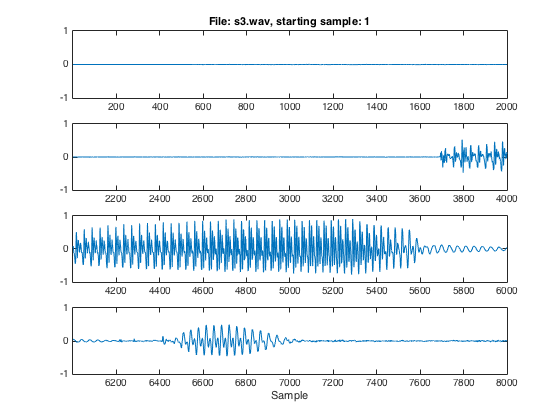

[y,fs,bits,fmt] = loadwav('s3.wav'); % load the speech file (s3.wav) y_scaled = y/max(y); % scaled samples of speech file sound(y_scaled,fs); % play sound the speech file % Plot the first 4-line page of samples t1 = [1:2000]; t2 = t1+2000; t3 = t2+2000; t4 = t3+2000; figure subplot(4,1,1); plot(t1,y_scaled(1:2000)); axis([1 2000 -1 1]); title('File: s3.wav, starting sample: 1'); subplot(4,1,2); plot(t2,y_scaled(2001:4000)); axis([2001 4000 -1 1]); subplot(4,1,3); plot(t3,y_scaled(4001:6000)); axis([4001 6000 -1 1]); subplot(4,1,4); plot(t4,y_scaled(6001:8000)); axis([6001 8000 -1 1]); xlabel('Sample'); % Plot the second 4-line page of samples t5 = t4+2000; t6 = t5+2000; t7 = t6+2000; t8 = t7+2000; figure subplot(4,1,1); plot(t5,y_scaled(8001:10000)); axis([8001 10000 -1 1]); title('File: s3.wav, starting sample: 8001'); subplot(4,1,2); plot(t6,y_scaled(10001:12000)); axis([10001 12000 -1 1]); subplot(4,1,3); plot(t7,y_scaled(12001:14000)); axis([12001 14000 -1 1]); subplot(4,1,4); plot(t8,y_scaled(14001:16000)); axis([14001 16000 -1 1]); xlabel('Sample'); % Plot the third 4-line page of samples t9 = t8+2000; t10 = t9+2000; t11 = t10+2000; t12 = t11+2000; figure subplot(4,1,1); plot(t9,y_scaled(16001:18000)); axis([16001 18000 -1 1]); title('File: s3.wav, starting sample: 16001'); subplot(4,1,2); plot(t10,y_scaled(18001:20000)); axis([18001 20000 -1 1]); subplot(4,1,3); plot(t11,y_scaled(20001:22000)); axis([20001 22000 -1 1]); subplot(4,1,4); plot(t12,y_scaled(22001:24000)); axis([22001 24000 -1 1]); xlabel('Sample');

Plot of sample
plot([16001:24000],y_scaled(16001:24000)); axis([16001 24000 -1 1])